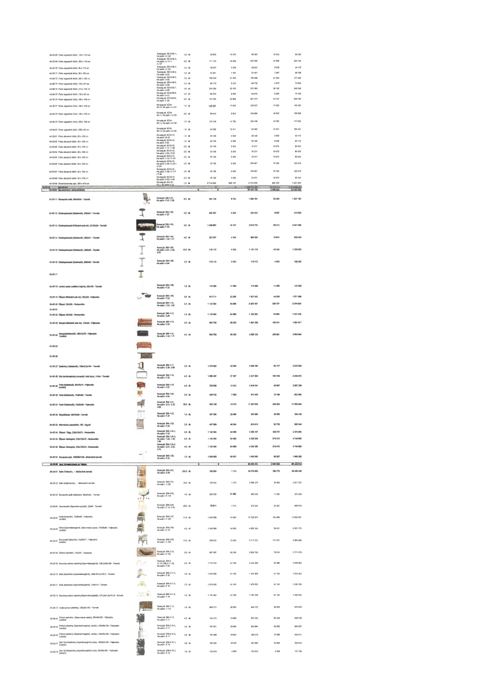

| Tétel | Megjegyzés | Menny. | Egys. | Anyag e.ár (net HUF) | Díj e.ár (net HUF) | Anyag összesen (net HUF) | Díj összesen (net HUF) | Anyag+Díj összesen (net HUF) |
|---|---|---|---|---|---|---|---|---|
| 44-00-22 Fazettázott vágott tükör, 120 x 110 cm | Konszig jel: B0-8-09.1, He.szám: A.129 | 1,0 | db | 69 988 | 10 032 | 69 988 | 10 032 | 80 020 |
| 44-00-23 Falra ragasztott tükör, 203 x 110 cm | Konszig jel: B0-8-09.2, He.szám: A.141 / A.137 | 2,0 | db | 111 133 | 15 928 | 222 266 | 31 856 | 254 122 |
| 44-00-70 Falra ragasztott tükör, 50 x 110 cm | Konszig jel: B0-8-09.3, He.szám: A.120 | 1,0 | db | 38 637 | 5 538 | 38 637 | 5 538 | 44 175 |
| 44-00-71 Falra ragasztott tükör, 90 x 105 cm | Konszig jel: B0-8-09.4, He.szám: A.20 | 1,0 | db | 51 401 | 7 367 | 51 401 | 7 367 | 58 768 |
| 44-00-72 Falra ragasztott tükör, 265 x 185 cm | Konszig jel: B0-8-09.5, He.szám: A.10 | 1,0 | db | 150 049 | 21 506 | 150 049 | 21 506 | 171 555 |
| 44-00-73 Falra ragasztott tükör, 130 x 87 cm | Konszig jel: B0-8-09.6, He.szám: A.63 | 1,0 | db | 64 719 | 9 275 | 64 719 | 9 275 | 73 994 |
| 44-00-74 Falra ragasztott tükör, 213 x 135 cm | Konszig jel: B0-8-09.7, He.szám: A.03 | 1,0 | db | 210 300 | 30 156 | 210 300 | 30 156 | 240 456 |
| 44-00-75 Falra ragasztott tükör, 130 x 92 cm | Konszig jel: B0-8-09.8, He.szám: A.01 | 1,0 | db | 64 816 | 9 290 | 64 816 | 9 290 | 74 106 |
| 44-00-76 Falra ragasztott tükör, 195 x 150 cm | Konszig jel: B0-8-09.9, He.szám: A.122 | 2,0 | db | 143 789 | 20 609 | 287 577 | 41 218 | 328 796 |
| 44-00-77 Falra ragasztott tükör, 190 x 100 cm | Konszig jel: B0-8-09.10, He.szám: A.127 | 1,0 | db | 125 527 | 17 925 | 125 527 | 17 925 | 143 452 |
| 44-00-78 Falra ragasztott tükör, 100 x 130 cm | Konszig jel: B0-8-09.11, He.szám: A.123 | 2,0 | db | 68 443 | 9 810 | 136 886 | 19 620 | 156 506 |
| 44-00-79 Falra ragasztott tükör, 200 x 100 cm | Konszig jel: B0-8-09.12, He.szám: A.132 | 1,0 | db | 103 148 | 14 783 | 103 148 | 14 783 | 117 932 |
| 44-00-80 Falra ragasztott tükör, 200 x 90 cm | Konszig jel: B0-8-09.13, He.szám: A.140 | 1,0 | db | 93 080 | 13 341 | 93 080 | 13 341 | 106 421 |
| 44-00-81 Falra akasztott tükör, 60 x 180 cm | Konszig jel: B0-8-10, He.szám: M.20 | 1,0 | db | 35 136 | 5 035 | 35 136 | 5 035 | 40 172 |
| 44-00-82 Falra akasztott tükör, 60 x 180 cm | Konszig jel: B0-8-10, He.szám: M.12 | 1,0 | db | 35 136 | 5 035 | 35 136 | 5 035 | 40 172 |
| 44-00-83 Falra akasztott tükör, 60 x 130 cm | Konszig jel: B0-8-10, He.szám: 2.05 / 2.50 | 2,0 | db | 35 136 | 5 035 | 70 271 | 10 072 | 80 343 |
| 44-00-84 Falra akasztott tükör, 60 x 130 cm | Konszig jel: B0-8-10, He.szám: 2.05 / 2.50 | 2,0 | db | 35 136 | 5 035 | 70 271 | 10 072 | 80 343 |
| 44-00-85 Falra akasztott tükör, 60 x 130 cm | Konszig jel: B0-8-10, He.szám: 5.10 / 5.11 | 2,0 | db | 35 136 | 5 035 | 70 271 | 10 072 | 80 343 |
| 44-00-86 Falra akasztott tükör, 60 x 130 cm | Konszig jel: B0-8-10 | 3,0 | db | 35 136 | 5 035 | 105 407 | 15 106 | 120 513 |
| 44-00-87 Falra akasztott tükör, 60 x 130 cm | Konszig jel: B0-8-10, He.szám: F.117 / F.08 | 3,0 | db | 35 136 | 5 035 | 105 407 | 15 106 | 120 513 |
| 44-00-88 Falra akasztott tükör, 60 x 130 cm | Konszig jel: B0-8-10, He.szám: 4.02 / 4.52 | 2,0 | db | 35 136 | 5 035 | 70 271 | 10 072 | 80 343 |
| 44-00-89 Előszobaszekrény ajtó, 200 x 410 cm | Konszig jel: BA-1-01.1, He.szám: F.41 | 1,0 | db | 6 714 930 | 506 163 | 6 714 930 | 506 163 | 7 221 093 |
| 44-00-00 TÜKRÖK ÖSSZESEN | NaN | NaN | NaN | 0 | 0 | 1 189 777 335 | 35 109 313 | 1 224 886 648 |
| 45-00-00 ASZTALOK, SZÉKEK, KANAPÉK | NaN | NaN | NaN | 0 | 0 | 89 033 710 | 3 588 886 | 92 622 596 |
| 01-07-11 Recepciós szék, 65x65x94 - Termék | Konszig jel: BM-1-01, He.szám: F.01, F.02 | 6,0 | db | 264 130 | 8 734 | 1 584 781 | 52 406 | 1 637 187 |
| 01-07-12 Dohányzóasztal (Közlekedő), Ø90x31 - Termék | Konszig jel: BM-1-02, He.szám: F.37 | 2,0 | db | 202 267 | 4 243 | 404 533 | 8 487 | 413 020 |
| 01-07-13 Dohányzóasztal (Földszinti aula tér), Ø120x30 - Termék | Konszig jel: BM-1-03, He.szám: F.02 | 2,0 | db | 1 456 887 | 14 107 | 2 913 773 | 28 213 | 2 941 986 |
| 01-07-14 Dohányzóasztal (Közlekedő), Ø50x31 - Termék | Konszig jel: BM-1-04, He.szám: 1.32, 1.71 | 4,0 | db | 202 267 | 4 243 | 809 066 | 16 974 | 826 040 |
| 01-07-15 Dohányzóasztal (Közlekedő), Ø60x50 - Termék | Konszig jel: BM-1-05, He.szám: 3.01, 3.39, 3.98 | 10,0 | db | 118 112 | 4 243 | 1 181 119 | 42 434 | 1 223 553 |
| 01-07-16 Dohányzóasztal (Közlekedő), Ø90x60 - Termék | Konszig jel: BM-1-06, He.szám: 4.04 | 1,0 | db | 118 112 | 4 243 | 118 112 | 4 243 | 122 355 |
| 01-07-18 Lerakó asztal (szállított bejárat), 90x180 - Termék | Konszig jel: BM-1-08, He.szám: F.23 | 1,0 | db | 115 389 | 11 660 | 115 389 | 11 660 | 127 048 |
| 01-07-19 Ülőpad (Földszinti aula tér), 90x220 - Fejlesztés | Konszig jel: BM-1-09, He.szám: F.02 | 2,0 | db | 813 711 | 22 283 | 1 627 422 | 44 566 | 1 671 988 |
| 01-07-20 Ülőpad, 50x230 - Restaurálás | Konszig jel: BM-1-10, He.szám: 1.02, 1.03 | 2,0 | db | 1 132 584 | 54 869 | 2 265 167 | 109 737 | 2 374 905 |
| 01-07-22 Ülőpad, 60x230 - Restaurálás | Konszig jel: BM-1-12, He.szám: 2.49 | 1,0 | db | 1 132 584 | 54 869 | 1 132 584 | 54 869 | 1 187 452 |
| 01-07-23 Kanapé (Földszinti aula tér), 220x90 - Fejlesztés | Konszig jel: BM-1-13, He.szám: F.02 | 2,0 | db | 800 793 | 50 205 | 1 601 586 | 100 411 | 1 701 997 |
| 01-07-24 Kanapé (Közlekedő), 180x72x78 - Fejlesztés | Konszig jel: BM-1-14, He.szám: 1.32, 1.71 | 4,0 | db | 900 783 | 50 205 | 3 603 133 | 200 821 | 3 803 954 |
| 01-07-27 Szalonasztal (Közlekedő), 158x42,5x164 - Termék | Konszig jel: BM-1-17, He.szám: 3.39, 3.98 | 2,0 | db | 1 479 592 | 42 359 | 2 959 185 | 84 717 | 3 043 902 |
| 01-07-28 Zárt tárolószekrény (recepció, hűtő rész), 115x4 - Termék | Konszig jel: BM-1-18, He.szám: F.02 | 4,0 | db | 1 085 407 | 27 297 | 4 341 628 | 109 189 | 4 450 816 |
| 01-07-29 Fotel (Közlekedő), 85x72x74 - Fejlesztés | Konszig jel: BM-1-19, He.szám: F.07 | 4,0 | db | 729 560 | 12 242 | 2 918 241 | 48 967 | 2 967 208 |
| 01-07-30 Fotel (Közlekedő), 73x60x80 - Termék | Konszig jel: BM-1-20, He.szám: 4.04 | 2,0 | db | 408 702 | 7 600 | 817 405 | 15 199 | 832 604 |
| 01-07-31 Fotel (Közlekedő), 73x60x80 - Fejlesztés | Konszig jel: BM-1-21, He.szám: 3.01, 3.16, 3.39 | 28,0 | db | 403 129 | 12 379 | 11 287 626 | 346 623 | 11 634 249 |
| 01-07-32 Könyvtárpult, 49x78x90 - Termék | Konszig jel: BM-1-22, He.szám: F.37 | 1,0 | db | 307 085 | 29 080 | 307 085 | 29 080 | 336 165 |
| 01-07-33 Információs panel/tartó, 180 - Egyedi | Konszig jel: BM-1-23, He.szám: F.02 | 2,0 | db | 407 809 | 46 364 | 815 618 | 92 729 | 908 346 |
| 01-07-34 Ülőpad-Tölgy, 225x100x75 - Restaurálás | Konszig jel: BM-1-24.1, He.szám: F.02 | 2,0 | db | 1 132 584 | 54 869 | 2 265 167 | 109 737 | 2 374 905 |
| 01-07-35 Ülőpad-Mahagóni, 220x100x75 - Restaurálás | Konszig jel: BM-1-24.1, He.szám: 1.02, 1.38, 1.39 | 4,0 | db | 1 132 584 | 54 869 | 4 530 335 | 219 475 | 4 749 809 |
| 01-07-36 Ülőpad-Mahagóni, 220x100x75 - Restaurálás | Konszig jel: BM-1-24.2, He.szám: 2.01, 2.45, 2.74 | 4,0 | db | 1 132 584 | 54 869 | 4 530 335 | 219 475 | 4 749 809 |
| 01-07-37 Recepciós pult, 1050x230x100 - Módosított termék | Konszig jel: BM-1-25, He.szám: F.02 | 1,0 | db | 1 800 686 | 85 537 | 1 800 686 | 85 537 | 1 886 222 |
| 45-20-00 MNB GYERMEKMEGŐRZŐ TERMÉKEI | NaN | NaN | NaN | 0 | 0 | 85 630 361 | 2 942 549 | 88 572 910 |
| 45-20-01 Szék (Tetőtér), ... - Módosított termék | Konszig jel: BM-2-01, He.szám: A.59 | 239,0 | db | 160 384 | 1 715 | 38 079 883 | 385 773 | 38 465 656 |
| 45-20-02 Szék (Tetőtér), ... - Módosított termék | Konszig jel: BM-2-01, He.szám: 1.102 | 18,0 | db | 160 384 | 1 715 | 2 886 375 | 30 862 | 2 917 237 |
| 45-20-03 Recepciós szék (Könyvtár), 65x65x94 - Termék | Konszig jel: BM-2-02, He.szám: F.110 | 1,0 | db | 263 635 | 11 592 | 263 635 | 11 592 | 275 228 |
| 45-20-04 Gyerekszék (Gyermekmegőrző), 28x40 - Termék | Konszig jel: BM-2-05, He.szám: F.19, F.20 | 20,0 | db | 18 611 | 1 715 | 372 224 | 34 291 | 406 515 |
| 45-20-05 Fotel (Könyvtár), 73x60x80 - Fejlesztés | Konszig jel: BM-2-07, He.szám: F.110 | 11,0 | db | 1 248 088 | 14 855 | 13 728 973 | 163 408 | 13 892 381 |
| 45-20-06 Fotel (Gyermekmegőrző, Baba-mama szoba), 72x60x80 - Fejlesztés | Konszig jel: BM-2-08, He.szám: F.19 | 4,0 | db | 1 248 088 | 14 855 | 4 992 354 | 59 421 | 5 051 775 |
| 45-20-07 Karosszék (Könyvtár), 52x55x77 - Fejlesztés | Konszig jel: BM-2-09, He.szám: F.103 | 13,0 | db | 209 025 | 13 203 | 2 717 323 | 171 637 | 2 888 960 |
| 45-20-08 Ülőpad (öltöző), 70x250 - Egyedi | Konszig jel: BM-2-10, He.szám: A.52 | 3,0 | db | 897 587 | 26 306 | 2 692 760 | 78 919 | 2 771 679 |
| 45-20-09 Alacsony polcos szekrény (Gyermekmegőrző), 300x40x100 - Termék | Konszig jel: BM-2-11.1A, BM-2-11.1B, He.szám: F.19 | 2,0 | db | 1 712 233 | 41 193 | 3 424 466 | 82 385 | 3 506 852 |
| 45-20-10 Benti játszóház (Gyermekmegőrző), 180x187,5x158,5 - Termék | Konszig jel: BM-2-11.2, He.szám: F.20 | 1,0 | db | 1 474 009 | 41 193 | 1 474 009 | 41 193 | 1 515 202 |
| 45-20-11 Benti játszóház (Gyermekmegőrző), 110x110 - Termék | Konszig jel: BM-2-11.3, He.szám: F.19 | 1,0 | db | 1 479 592 | 41 193 | 1 479 592 | 41 193 | 1 520 785 |
| 45-20-12 Alacsony polcos szekrény (Gyermekmegőrző), 475,2x41x181,8 - Termék | Konszig jel: BM-2-11.4, He.szám: F.19 | 1,0 | db | 1 191 341 | 41 193 | 1 191 341 | 41 193 | 1 232 533 |
| 45-20-13 Irodai polcos szekrény, 120x45x100 - Termék | Konszig jel: BM-2-12, He.szám: F.110 | 1,0 | db | 949 172 | 26 805 | 949 172 | 26 805 | 975 978 |
| 45-20-14 Polcos szekrény (Baba-mama szoba), 85x40x180 - Fejlesztés | Konszig jel: BM-2-13, He.szám: F.11 | 4,0 | db | 134 373 | 20 809 | 537 492 | 83 236 | 620 728 |
| 45-20-15 Polcos szekrény (Gyermekmegőrző, raktár), 130x40x180 - Fejlesztés | Konszig jel: BM-2-14.1, He.szám: F.17 | 3,0 | db | 197 651 | 20 884 | 592 954 | 62 653 | 655 607 |
| 45-20-16 Polcos szekrény (Gyermekmegőrző, raktár), 120x40x180 - Fejlesztés | Konszig jel: BM-2-14.2, He.szám: F.17 | 2,0 | db | 193 408 | 18 847 | 386 816 | 37 695 | 424 511 |
| 45-20-17 Zárt tárolószekrény (Gyermekmegőrző), 100x40x180 - Fejlesztés | Konszig jel: BM-2-15.1, He.szám: F.18 | 3,0 | db | 160 354 | 18 203 | 481 062 | 54 609 | 535 670 |
| 45-20-18 Zárt tárolószekrény (Gyermekmegőrző), 80x40x180 - Fejlesztés | Konszig jel: BM-2-15.2, He.szám: F.18 | 1,0 | db | 152 910 | 4 825 | 152 910 | 4 825 | 157 735 |
